本地部署
安装
在官网安装Flink，并解压到
/usr/local/flinksudo tar -zxf flink-1.6.2-bin-hadoop27-scala_2.11.tgz -C /usr/local cd /usr/local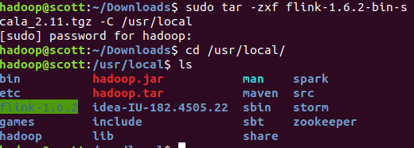
修改文件名字，并设置权限
sudo mv ./flink-*/ ./flink sudo chown -R hadoop:hadoop ./flink
修改配置文件
Flink对于本地模式是开箱即用的，如果要修改Java运行环境，可修改conf/flink-conf.yaml中的env.java.home，设置为本地java的绝对路径
添加环境变量
vim ~/.bashrc
export FLNK_HOME=/usr/local/flink
export PATH={% math_inline %}FLINK_HOME/bin:{% endmath_inline %}PATH
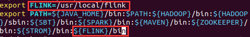
启动Flink
start-cluster.sh
- 可以通过观察logs目录下的日志来检测系统是否正在运行了
tail log/flink--jobmanager-.log
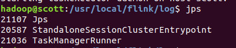
- JobManager同时会在8081端口上启动一个web前端，通过http://localhost:8081来访问
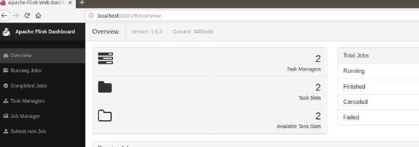
可以发现flink已经正常启动
运行示例
使用Maven创建Flink项目，在pom.xml中添加以下依赖：
<dependencies>
<dependency>
<groupId>org.apache.flink</groupId>
<artifactId>flink-java</artifactId>
<version>1.6.2</version>
</dependency>
<dependency>
<groupId>org.apache.flink</groupId>
<artifactId>flink-streaming-java_2.11</artifactId>
<version>1.6.2</version>
</dependency>
<dependency>
<groupId>org.apache.flink</groupId>
<artifactId>flink-clients_2.11</artifactId>
<version>1.6.2</version>
</dependency>
</dependencies>
批处理运行WordCount
官方示例
可以直接在/usr/local/flink/examples/batch中运行WordCount程序，并且这里还有更多示例：
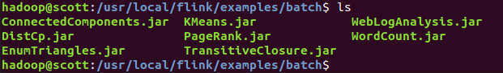
运行：
flink run WordCount.jar
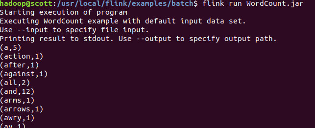
代码
WordCountData
提供原始数据
import org.apache.flink.api.java.DataSet;
import org.apache.flink.api.java.ExecutionEnvironment;
public class WordCountData {
public static final String[] WORDS=new String[]{"To be, or not to be,--that is the question:--", "Whether \'tis nobler in the mind to suffer", "The slings and arrows of outrageous fortune", "Or to take arms against a sea of troubles,", "And by opposing end them?--To die,--to sleep,--", "No more; and by a sleep to say we end", "The heartache, and the thousand natural shocks", "That flesh is heir to,--\'tis a consummation", "Devoutly to be wish\'d. To die,--to sleep;--", "To sleep! perchance to dream:--ay, there\'s the rub;", "For in that sleep of death what dreams may come,", "When we have shuffled off this mortal coil,", "Must give us pause: there\'s the respect", "That makes calamity of so long life;", "For who would bear the whips and scorns of time,", "The oppressor\'s wrong, the proud man\'s contumely,", "The pangs of despis\'d love, the law\'s delay,", "The insolence of office, and the spurns", "That patient merit of the unworthy takes,", "When he himself might his quietus make", "With a bare bodkin? who would these fardels bear,", "To grunt and sweat under a weary life,", "But that the dread of something after death,--", "The undiscover\'d country, from whose bourn", "No traveller returns,--puzzles the will,", "And makes us rather bear those ills we have", "Than fly to others that we know not of?", "Thus conscience does make cowards of us all;", "And thus the native hue of resolution", "Is sicklied o\'er with the pale cast of thought;", "And enterprises of great pith and moment,", "With this regard, their currents turn awry,", "And lose the name of action.--Soft you now!", "The fair Ophelia!--Nymph, in thy orisons", "Be all my sins remember\'d."};
public WordCountData() {
}
public static DataSet<String> getDefaultTextLineDataset(ExecutionEnvironment env){
return env.fromElements(WORDS);
}
}
WordCountTokenizer
切分句子
import org.apache.flink.api.common.functions.FlatMapFunction;
import org.apache.flink.api.java.tuple.Tuple2;
import org.apache.flink.util.Collector;
public class WordCountTokenizer implements FlatMapFunction<String, Tuple2<String,Integer>>{
public WordCountTokenizer(){}
public void flatMap(String value, Collector<Tuple2<String, Integer>> out) throws Exception {
String[] tokens = value.toLowerCase().split("\\W+");
int len = tokens.length;
for(int i = 0; i<len;i++){
String tmp = tokens[i];
if(tmp.length()>0){
out.collect(new Tuple2<String, Integer>(tmp,Integer.valueOf(1)));
}
}
}
}
WordCount
主函数
import org.apache.flink.api.java.DataSet;
import org.apache.flink.api.java.ExecutionEnvironment;
import org.apache.flink.api.java.operators.AggregateOperator;
import org.apache.flink.api.java.utils.ParameterTool;
public class WordCount {
public WordCount(){}
public static void main(String[] args) throws Exception {
ParameterTool params = ParameterTool.fromArgs(args);
ExecutionEnvironment env = ExecutionEnvironment.getExecutionEnvironment();
env.getConfig().setGlobalJobParameters(params);
Object text;
//如果没有指定输入路径，则默认使用WordCountData中提供的数据
if(params.has("input")){
text = env.readTextFile(params.get("input"));
}else{
System.out.println("Executing WordCount example with default input data set.");
System.out.println("Use -- input to specify file input.");
text = WordCountData.getDefaultTextLineDataset(env);
}
AggregateOperator counts = ((DataSet)text).flatMap(new WordCountTokenizer()).groupBy(new int[]{0}).sum(1);
//如果没有指定输出，则默认打印到控制台
if(params.has("output")){
counts.writeAsCsv(params.get("output"),"\n", " ");
env.execute();
}else{
System.out.println("Printing result to stdout. Use --output to specify output path.");
counts.print();
}
}
}
首先打包成JAR包，这里需要使用-c指定main函数：
flink run -c WordCount WordCount.jar
流处理运行WordCount
官方示例
可以直接在/usr/local/flink/examples/streaming中运行WordCount程序，并且这里还有更多示例：
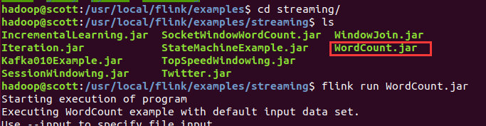
代码
SocketWindowWordCount
import org.apache.flink.api.common.functions.FlatMapFunction;
import org.apache.flink.api.java.utils.ParameterTool;
import org.apache.flink.streaming.api.datastream.DataStream;
import org.apache.flink.streaming.api.environment.StreamExecutionEnvironment;
import java.sql.Time;
import java.util.stream.Collector;
public class SocketWindowWordCount {
public static void main(String[] args) throws Exception {
// the port to connect to
final int port;
try {
final ParameterTool params = ParameterTool.fromArgs(args);
port = params.getInt("port");
} catch (Exception e) {
System.err.println("No port specified. Please run 'SocketWindowWordCount --port <port>'");
return;
}
// get the execution environment
final StreamExecutionEnvironment env = StreamExecutionEnvironment.getExecutionEnvironment();
// get input data by connecting to the socket
DataStream<String> text = env.socketTextStream("localhost", port, "\n");
// parse the data, group it, window it, and aggregate the counts
DataStream<WordWithCount> windowCounts = text
.flatMap(new FlatMapFunction<String, WordWithCount>() {
@Override
public void flatMap(String value, Collector<WordWithCount> out) {
for (String word : value.split("\\s")) {
out.collect(new WordWithCount(word, 1L));
}
}
})
.keyBy("word")
.timeWindow(Time.seconds(5), Time.seconds(1))
.reduce(new ReduceFunction<WordWithCount>() {
@Override
public WordWithCount reduce(WordWithCount a, WordWithCount b) {
return new WordWithCount(a.word, a.count + b.count);
}
});
// print the results with a single thread, rather than in parallel
windowCounts.print().setParallelism(1);
env.execute("Socket Window WordCount");
}
// Data type for words with count
public static class WordWithCount {
public String word;
public long count;
public WordWithCount() {}
public WordWithCount(String word, long count) {
this.word = word;
this.count = count;
}
@Override
public String toString() {
return word + " : " + count;
}
}
}
首先打包成JAR包，然后启动netcat：
nc -l 9000
将终端启动netcat作为输入流：
提交Jar包：
flink run -c SocketWindowWordCount WordCountSteaming.jar --port 9000
这样终端会一直等待netcat的输入流
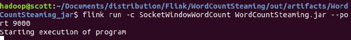
在netcat中输入字符流：
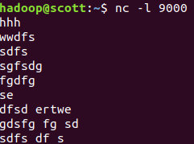
可以在WebUI中查看运行结果：
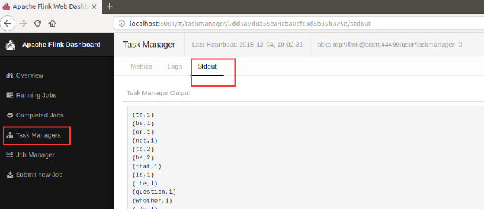
可视化
Flink的Execution Plan可以可视化，更清楚的查看我们的任务逻辑。
对于任意一个JAR包，我们可以执行：
flink info -c WordCount WordCount.jar > ./output
这样，就将执行计划的json文件存放在output中。
将该执行任务复制到这个网站： Flink Plan Visualizer，即可查看：
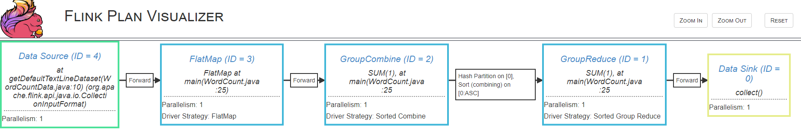